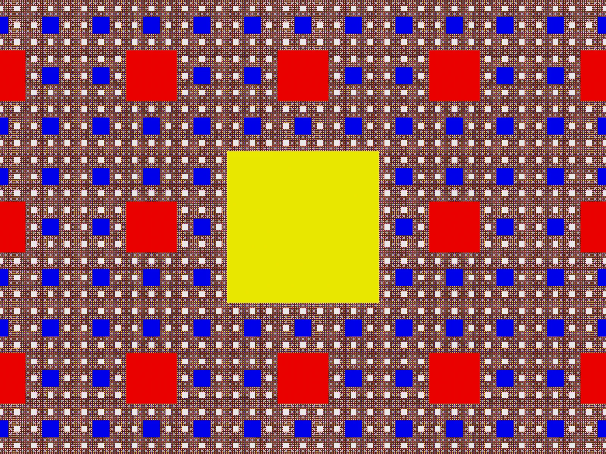
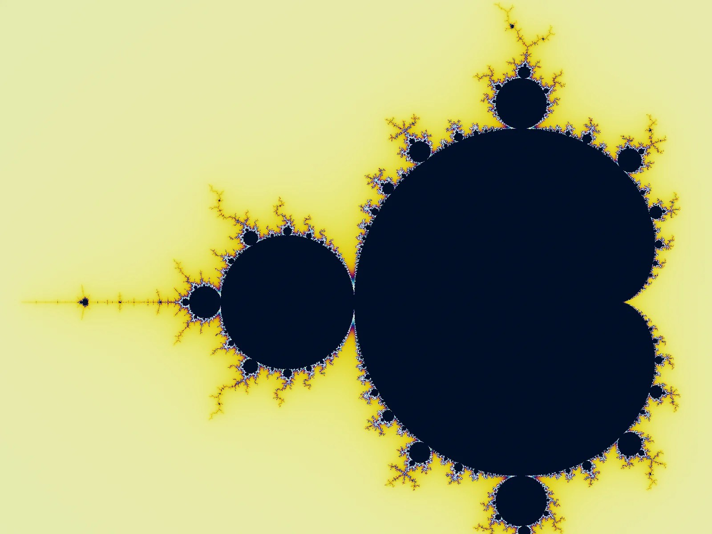
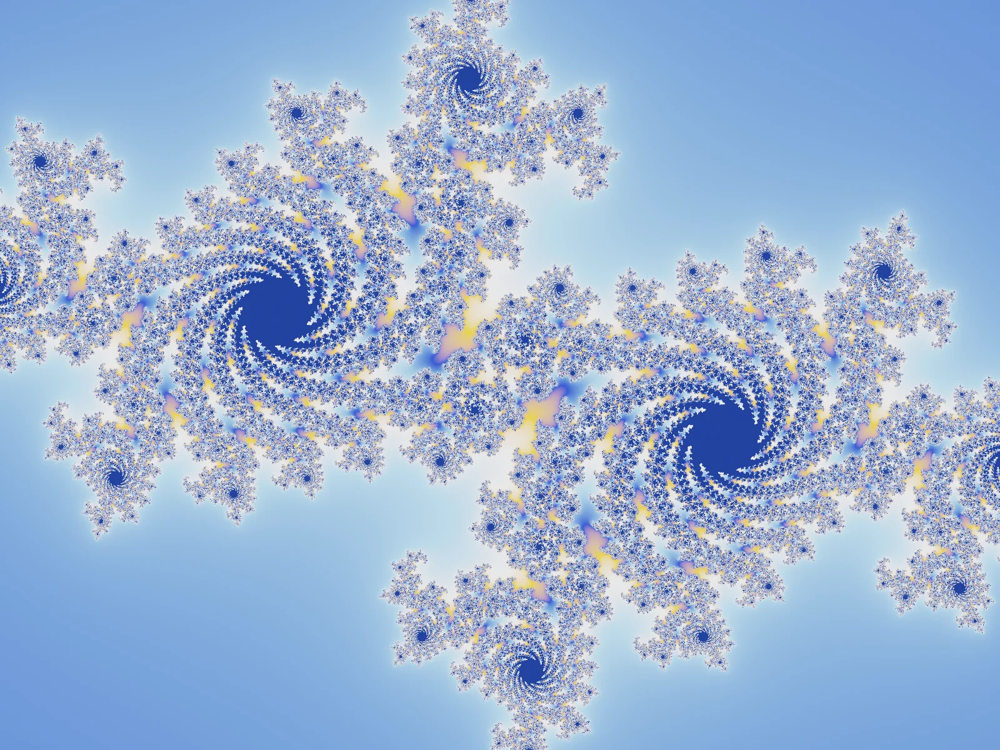
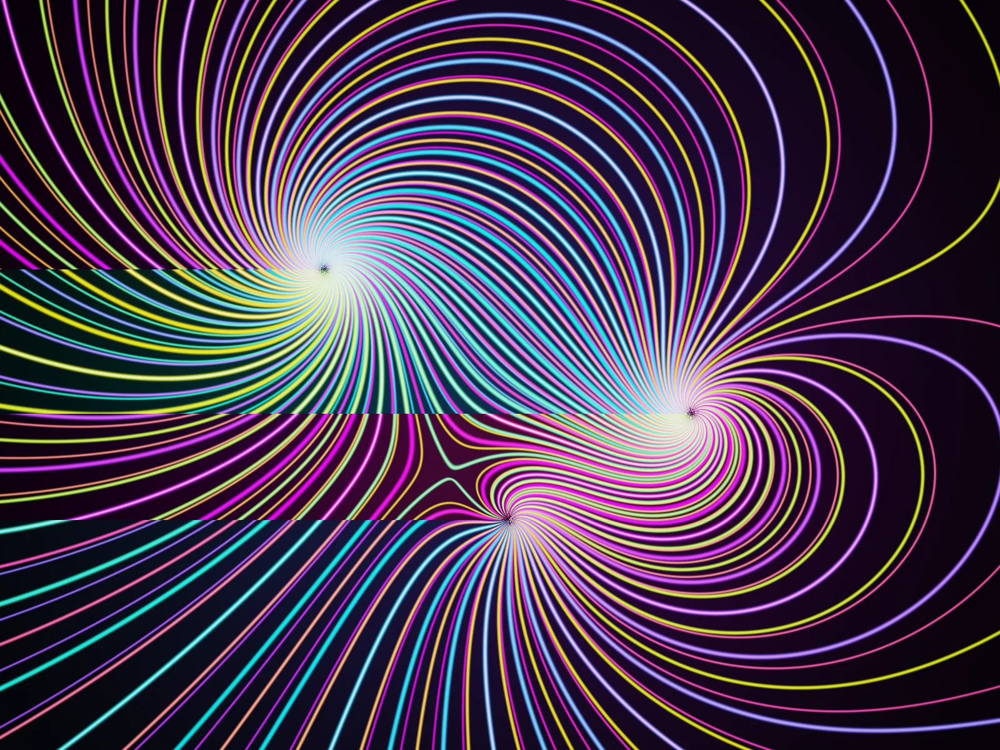

Fractal Universe
Fullscreen GLSL studies of self-similar structures found across nature, mathematics, and perception. Each shader is a single self-contained HTML file.

Sierpinski Carpet
A self-similar square fractal built by recursively removing the center ninth of each sub-square. Continuously zooms through infinite levels of detail with iridescent depth coloring.

Mandelbrot Zoom
An infinitely looping dive into the Seahorse Valley of the Mandelbrot set, with vibrant iridescent color cycling through the iteration bands.

Julia Set
A connected Julia set at c = (-0.7, 0.27) in the Seahorse Valley, rendered with smooth escape-time coloring. The parameter c drifts in a slow orbit, making the fractal gently breathe.

Plasma Threads
Three logarithmic spiral attractors weave glowing neon threads through a mathematical flow field. Where streams overlap, additive light builds from deep color to near-white intensity.